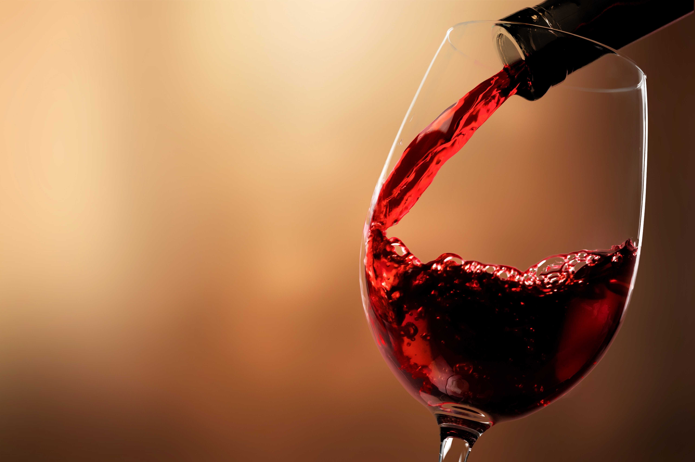
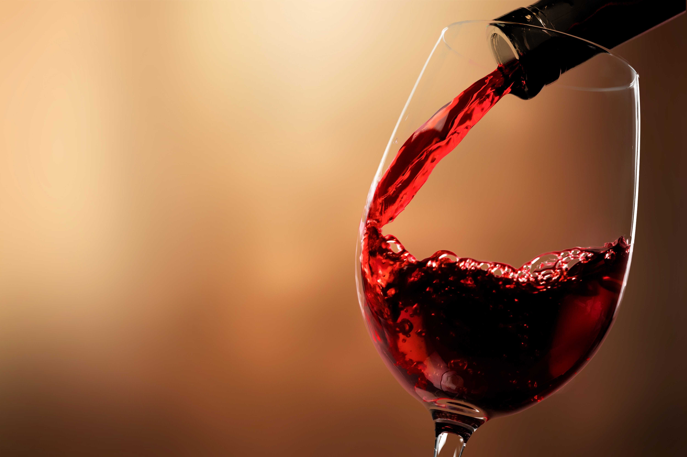

(1).png)
שלב התכנון והכנה
בשלב זה מומלץ לתכנן כמה בקבוקי יין תרצו שיהיו ברשותכם בסוף התהליך, כשלכל בקבוק יין בנפח 750 מ"ל תזדקקו לכמות של כקילו ורבע ענבי יין.
על מנת שנוכל להתחיל בתהליך הפקת היין כמובן, שהדבר המרכזי הוא שיהיו ענבים מתוקים ברשותכם בין אם זה בחצר ביתכם, בקנייה במהשוק או מכורמים.
כמו כן, יש לוודא שיש לכם די מקום להכנת היין ואחסונו, ורצוי לפנות אזור או חדר ייעודי בבית לצורך כך.
עוד ראוי לציין בהקשר זה שלמרתף מטבע הדברים עדיפות מובנית על חדרים אחרים בבית, אם כי ניתן בהחלט לייצר יין גם בכל מרחב אחר כל עוד הוא נקי, מאוורר או ממוזג, ומוצל.
בנוסף, עליכם להשיג את הציוד הנחוץ מראש, כך שישרת אתכם בבוא העת עם תחילת תהליך הפקת היין.
ממשיכים לשלב התסיסה
בשלב זה תידרשו תחילה לחטא את הציוד שהכנתם מראש.
לאחר חיטוי הכלים, עליכם להפריד את ענבי היין מהשזרות, הלא הן הענפים שמחברים בין הענבים, מהעלים, מענבים רקובים ומענבי בוסר.
את הענבים שהתקבלו יש לשבור כדי להפיק מהם מיץ, על ידי מכונה מפרידה ומועכת, באופן ידני או באמצעות דריכה עליהם בתוך גיגית ברגליים שטופות היטב.
את מיץ התירוש שייווצר לאחר שבירת הענבים יש למלא במיכל התסיסה בגובה שאינו עולה על שני שליש מנפח המכל.
לכל עשרים ליטר תירוש יש להוסיף אבקת ביסולפיט בכמות של רבע כפית, ושתי כפיות שמרי יין, ולאחר מכן לכסות את פתחו של מיכל התסיסה ברשת צפופה, מגבת או פקק רופף, למניעת כניסתם של חיידקים ואפשור שחרורם של גזים.
את קליפות הענבים שצפות במהלך התסיסה יש לשקע מידי בוקר וערב באמצעות הידיים, הרגליים או בעזרת כלי מתאים.
עוד חשוב לשמור על טמפרטורה שאינו עולה על 28 מעלות במהלך התסיסה, ובמידת הצורך לקרר את היין באמצעות בקבוק קרח סגור שמוכנס למיכל, בעזרת מאוורר או בחדר ממוזג.
התסיסה מסתיימת לאחר 4-14 ימים, כאשר לא נוצרת עוד כיפה של קליפות ענבים על פני התירוש, כשאחוז הסוכר שנותר בתירוש הנו אפסי, או כשמד הידרומטר מראה מינוס 2 בריקס.

יישון היין
כעבור שלושה ימים מעבירים את היין מהמיכל הראשון למיכל נוסף המהווה כמיכל תסיסה.
יש להניח ליין לזרום כמעט עד תומו – אך להקפיד שלא להעביר את המשקעים שהצטברו בתחתית המכל, וכך לאפשר ליין להפוך לצלול יותר.
בשלב זה מומלץ להוסיף ליין בקטריות מלולקטיות לטובת התסיסה השנייה וכן שמינית כפית של אבקת ביסולפיט מהול ומומס ביין לכל עשרים ליטר מהיין שלכם.
את המיכל יש למלא עד לגובה של 3-5 ס"מ משפתו, ואחר לסגור אותו באמצעות הפיה והנשם.
לאחר שבוע עד חודש ימים ממועד ייצוב היין על ידי הוספת הביסולפיט, מומלץ לבצע את ההעברה ממיכל למיכל, על מנת להמשיך את תהליך הצטללות היין..
בשלב זה, מומלץ גם להוסיף כמות של כוס אחת או שניים של שביבי עץ אלון לכל עשרים ליטרים של יין,
מידי חודש עד חודש וחצי במהלך תקופת היישון, מומלץ לבצע העברה נוספת ממכיל למיכל, ובכל העברה יש להוסיף אבקת ביסולפיט בכמות של רבע כפית לכל עשרים ליטר יין.


ביקבוק היין
לטובת ביקבוק היין יש להצטייד בבקבוקי יין חדשים או לשימוש חוזר, בפקקי שעם ובמכשיר פיקוק.
בשלב זה מעבירים את היין לבקבוקים, בין אם על ידי העברה למיכל תסיסה המאובזר בברז תחתי, צינור העברה בעל ברז או בעזרת מכשיר למילוי אוטומטי.
מומלץ למלא את היין עד לגובה של 2-3 ס"מ מפיית הבקבוק, אותו ניתן לסמן באמצעות גומייה, ואז לפקוק את הבקבוק בפקק השעם.
לאחר הפיקוק יש להמתין יום-יומיים לפני שמשכיבים את הבקבוק, על מנת לאפשר לפקק השעם להתרחב ולאטום כראוי את היין כך שיהיה מוגן מפני חדירת חמצן.
 
